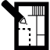

Nectar Shakir uses a multi-step process in order to deliver the best website for you.
Analysis
Sketch

Design
Develop
Testing
Launch
Analysis
The Information architecture refers to the structure or organization of the website. It describes the ways in which the different pages of the website relates to one another and ensures information is organized in a consistent and predictable way on each page. The goal for the Information Architecture is to create effective site organization and navigation.